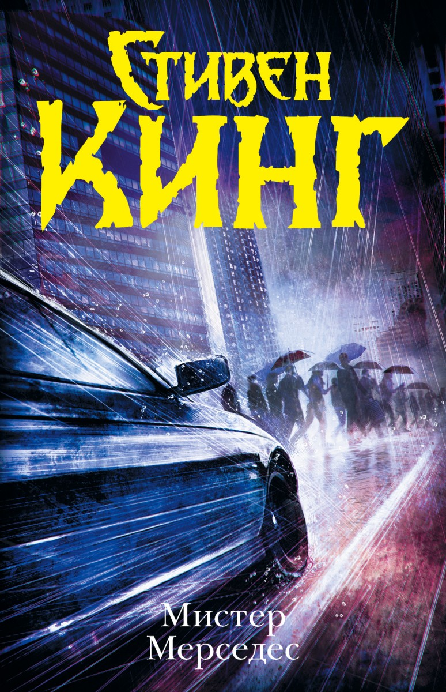

Моя улюблена книга
Богуцький Віктор Володимирович

Назва книги: Містер Мерседес
Автор: Стівен Кінг
Жанр: детектив, триллер
Рік першого видання: 2014
Короткий опис
Містер Мерседес (англ. Mr. Mercedes) — роман Стівена Кінга, який став першою книгою трилогії, про що 10 червня 2014 автор повідомив у своєму офіційному Twitter-акаунті. Книга розповідає історію відставного поліцейського, який після виходу на пенсію намагається докопатися до істини в нерозкритому злочині, який вчинив водій «Мерседеса». У самий розпал слідства злочинець втягує екс-поліцейського у небезпечну гру, яка призводить до непередбачуваних наслідків для всіх учасників пригоди.
Про автора
Стівен Едвінг Кінг
1947-
американський письменник, автор більш ніж 200 творів, серед яких понад 50 книг-бестселерів у стилях жахи (англ. horror), фентезі, трилер, містика. Також писав під псевдонімом Річард Бахман (англ. Richard Bachman). Було продано більш ніж 350 млн копій його романів та збірок оповідань. На основі його історій знято низку фільмів, а також намальовані комікси. Нагороджений медаллю «За особливий внесок в американську літературу». 2003 року Національний фонд книг нагородив його медаллю за видатний внесок в американську літературу. Також отримував нагороди за внесок у літературу протягом всієї кар'єри, такі як премії «За внесок у світове Фентезі» (2004), був нагороджений Канадською асоціацією книгопродавців (2007) і званням Гросмейстра від Американських письменників містиків (2007).
Под синим зонтом Дебби
Отравленная приманка
Зов мертвых
Поцелуи на мидвее
Синий «мерседес»
От автора
От переводчика
9–10 апреля 2009 г.
Оги Оденкерк обычно ездил на «датсуне» 1997 года выпуска, который, несмотря на большой пробег, никаких хлопот по части ремонта ему не доставлял, но бензин стоил дорого, особенно для безработного. Городской центр находился в дальней части мегаполиса, поэтому Оги решил воспользоваться последним автобусом. Вышел из него в двадцать минут двенадцатого, с рюкзаком за плечами и скатанным спальником под мышкой. Подумал, что в три часа утра похвалит себя за пуховый спальник. Ночь выдалась туманной и холодной.
– Удачи, парень, – пожелал водитель, когда Оги выходил из автобуса. – Ты должен что-нибудь получить хотя бы за то, что будешь первым.
Только первым не вышло. Добравшись до гребня широкой, круто поднимавшейся дороги, которая вела к Городскому центру, Оги увидел у дверей большого зала Центра не меньше двух десятков человек: кто-то сидел, другие стояли. Стойки, соединенные желтыми лентами с надписями «НЕ ПЕРЕСЕКАТЬ», уже расставили, создав сложный, петляющий проход, похожий на лабиринт. Оги с подобным уже сталкивался, как в кинотеатрах, так и в банке (где он в настоящий момент превысил лимит по кредитной карточке), и понимал, зачем это нужно: чтобы разместить как можно больше людей в ограниченном пространстве.
Оказавшись в конце состоявшей из соискателей очереди, которой скоро предстояло превратиться в анаконду, Оги удивился и смутился, увидев, что перед ним женщина с младенцем, спящим в слинге. Щечки младенца покраснели от температуры, в каждом вдохе слышался хрип.
Женщина услышала приближение запыхавшегося Оги и обернулась. Молодая и симпатичная, несмотря на темные мешки под глазами. У ее ног стояла стеганая сумка. Наверняка с детскими вещами, предположил Оги.
– Привет, – поздоровалась она. – Добро пожаловать в Клуб ранних пташек.
– Надеюсь, нам удастся ухватить червячка. – Не долго думая, он протянул руку. Почему нет? – Огаст Оденкерк. Оги. Недавно уценен. В двадцать первом веке это означает, что меня турнули с работы.
Она пожала его руку. Крепко, твердо, без всякой застенчивости.
– Я Дженис Крей, а эта маленькая котомка радости – Патти. Наверное, я тоже уценена. Работала прислугой в одной милой семье в Шугар-Хайтс. Он… гм… ему принадлежал автомобильный салон.
Оги поморщился.
Дженис кивнула:
– Я знаю. Он сказал, что очень сожалеет, отпуская меня, но они должны потуже затянуть пояса.
– Такое здесь сплошь и рядом, – ответил Оги, подумав: Неужели она никого не смогла найти, чтобы посидели с ребенком? Неужели никого?
– Мне пришлось взять ее с собой. – Ей не требовалось уметь читать мысли, чтобы догадаться, о чем он думает. – Ни с кем не смогла оставить. Просто не с кем. Девушка, которая живет по соседству, не осталась бы на всю ночь, даже если бы я могла заплатить, а я не могу. Если не получу работу, просто не знаю, что мы будем делать.
– Ваши родители не могли ее взять? – спросил Оги.
– Они живут в Вермонте. Будь я поумнее, отвезла бы Патти туда. Там хорошо. Только у них свои проблемы. Папа говорит, что их дом ушел под воду. Не в прямом смысле, его не затопило или что-то в этом роде, а по части финансов.
Оги кивнул. Такое тоже случалось сплошь и рядом.
Несколько автомобилей поднялись по крутому склону со стороны Мальборо-стрит, где Оги вышел из автобуса. Повернули налево, на огромную и пока еще пустую равнину автостоянки, которая, Оги знал наверняка, заполнится к рассвету… задолго до открытия Первой ежегодной городской ярмарки вакансий. Все автомобили сошли с конвейера давным-давно. Из каждого вылезло по три-четыре соискателя, направившихся к дверям зала Городского центра. Оги давно уже не замыкал очередь. Она почти добралась до первого изгиба, образованного стойками и лентой.
– Если я получу работу, то смогу нанимать няню, – продолжила Дженис. – Но не на эту ночь. Ее нам с Патти придется провести здесь.
Малышка сухо закашлялась, встревожив Оги, шевельнулась в слинге, снова затихла. По крайней мере девочку тепло одели: даже на ручках крохотные варежки.
Детям и похуже приходится, без должной уверенности сказал себе Оги. Подумал о Пыльном котле, Великой депрессии. Что ж, этот кризис для него тоже тянул на великий. Два года назад он ни на что не жаловался. Разумеется, жил не на широкую ногу, но концы с концами сводил, и почти каждый месяц удавалось немного откладывать. Теперь все полетело в тартарары. С деньгами что-то произошло. Он этого не понимал, работал в экспедиционном отделе «Грейт лейкс транспорт» – офисный планктон, ничего больше, – занимался накладными и использовал компьютер только затем, чтобы отправить грузы кораблем, поездом или по воздуху.
– Люди увидят меня с ребенком и подумают, что я безответственная, – тревожилась Дженис. – Я это знаю. Уже вижу на их лицах то, что прочитала на вашем. Но что еще мне оставалось? Даже если бы девушка-соседка смогла остаться на ночь, мне бы это обошлось в восемьдесят четыре доллара. Восемьдесят четыре! У меня отложены деньги на квартиру за следующий месяц, а больше нет ни цента. – Она улыбнулась, но в свете ярких натриевых фонарей автостоянки Оги увидел блестевшие на ресницах слезы. – Я слишком много болтаю.
– Если вы пытаетесь извиниться, то это лишнее. – Очередь миновала первый изгиб и подошла к тому месту, где стоял Оги. И девушка говорила чистую правду. Многие глазели на малышку, спавшую в слинге.
– Да ладно. Я незамужняя мать-одиночка без работы. Хочу извиняться перед всеми и за все. – Она отвернулась и посмотрела на транспарант, натянутый над дверьми. «1000 РАБОЧИХ МЕСТ ГАРАНТИРОВАНА!» – гласила надпись большими буквами. «Мы поддерживаем жителей нашего города!» – сообщали буквы поменьше. Указали и автора цитаты, снова большими буквами: «МЭР РАЛЬФ КИНСЛЕР». – Иногда я хочу извиняться и за «Колумбайн», и за «девять-одиннадцать», и за Барри Бондса, принимавшего стероиды. – С ее губ сорвался истеричный смешок. – Иногда хочется извиняться даже за взрыв шаттла, но я только училась ходить, когда это произошло.
– Не волнуйтесь, – заверил ее Оги. – Все будет хорошо. – Это прозвучало вполне к месту.
– Жаль только, что так сыро, вот и все. Я ее тепло одела, на случай если действительно похолодает, но сырость… – Дженис покачала головой. – Мы прорвемся, правда, Патти? – Она одарила Оги беспомощной улыбкой. – Только бы дождь не пошел.
Дождь не пошел, но влажность увеличивалась, и вскоре они уже видели капельки, висевшие в ярком свете фонарей. В какой-то момент Оги осознал, что Дженис Крей спит стоя. Она чуть согнула одну ногу, ее плечи поникли, мокрые волосы прилипли к лицу, подбородок уткнулся в грудь. Оги посмотрел на часы: без четверти три.
Десятью минутами позже Патти Крей проснулась и заплакала. Ее мать (Мать-одиночка, подумал Оги) дернулась, всхрапнула, совсем как лошадь, подняла голову и попыталась вытащить малышку из слинга. Поначалу не получилось: ножки застряли. Оги пришел на помощь, придержал слинг с боков. Когда Патти все-таки вытащили, она уже вопила, и Оги заметил капельки воды, поблескивавшие на ее розовой курточке и шапочке такого же цвета.
– Она голодна, – пояснила Дженис. – Я могу дать ей грудь, но малышка еще и мокрая. Я это чувствую через штанишки. Господи, здесь ее не переоденешь… Посмотри, какая морось.
Оги задался вопросом, какой божок-шутник привел его в очередь следом за ней. Да и как эта женщина намеревалась прожить оставшиеся ей годы – все, а не только следующие восемнадцать, которые предстояло заботиться о ребенке? Прийти сюда в такую ночь с одной лишь пачкой подгузников! Попасть в столь отчаянное положение!
Спальник он еще раньше пристроил рядом с сумкой, в которой лежали подгузники Патти. Оги присел, развязал тесемки, расстелил спальник, расстегнул молнию.
– Залезай в него. Согреетесь обе. Потом я передам тебе все, что потребуется.
Она всмотрелась в него, прижимая к груди извивающуюся, вопящую малышку.
– Ты женат, Оги?
– Разведен.
– Дети?
Он покачал головой.
– Почему ты так добр к нам?
– Потому что вы здесь, – ответил он, пожав плечами.
Она еще мгновение не отрывала от него взгляда, решаясь, потом передала ему малышку. Оги держал ее на вытянутых руках, зачарованный красным, разъяренным личиком, капелькой сопли, повисшей на вздернутом носике, ножками во фланелевом комбинезоне, пребывающими в непрерывном движении. Дженис залезла в спальник, протянула руки.
– Давай ее сюда.
Оги отдал, и женщина уползла в спальник. Позади, там, где очередь уходила ко второму изгибу, двое молодых людей таращились на них.
– Увидели что-то интересное? – бросил Оги, и они отвернулись.
– Дашь мне подгузник? – спросила Дженис. – Я хочу переодеть ее перед кормлением.
Он опустился на колено на мокрую мостовую, расстегнул сумку. Удивился, найдя марлевые подгузники вместо памперсов, потом понял: марлевые могли использоваться снова и снова. Может, эту женщину не стоило совсем уж списывать со счетов.
– Тут бутылочка «Бэби мэджик». Достать?
Из спальника торчали только каштановые волосы.
– Да, пожалуйста.
Он передал подгузник и лосьон. Спальник зашевелился. Поначалу крики усилились. Откуда-то из терявшейся в тумане очереди донеслось:
– Неужели нельзя заткнуть ребенку рот?
Тут же послышался другой голос:
– Кто-нибудь, вызовите службу социальной защиты.
Оги ждал, наблюдая за спальным мешком. Наконец шевеления прекратились. Появилась рука с подгузником.
– Положишь в сумку? Там есть пластиковый мешок для грязных подгузников. – Дженис смотрела на него, как крот из норы. – Не волнуйся, он не испачкан, только мокрый.
Оги взял подгузник, положил в пластиковый мешок с надписью «КОСТКО», затем застегнул сумку на молнию. Плач из спального мешка (Так много мешков, подумал он) доносился еще с минуту, потом резко оборвался: Патти принялась сосать грудь на автостоянке у Городского центра. Над дверьми, до открытия которых оставалось шесть часов, от порыва ветра апатично колыхнулся транспарант с надписью «1000 РАБОЧИХ МЕСТ ГАРАНТИРОВАНА!»
Конечно, подумал Оги. И СПИДом не заболеешь, если горстями жрать аскорбинку.
Прошло двадцать минут. Новые автомобили подъезжали со стороны Мальборо-стрит. Все больше людей присоединялось к очереди. Оги прикинул, что в ней уже стояло человек четыреста. И по самым скромным оценкам выходило, что к моменту открытия ярмарки вакансий здесь будет стоять две тысячи безработных.
Если мне предложат жарить бургеры в «Макдоналдсе», я соглашусь?
Вероятно.
Как насчет зазывалы в «Уол-марте»?
Наверняка. Широкая улыбка и вопрос: «Как поживаете сегодня?» Оги подумал, что за эту работу он бы схватился обеими руками. Помчался бы на смену прямо из Городского центра.
Общение с людьми – это мое, подумал он. И рассмеялся.
– Что смешного? – донеслось из спальника.
– Ничего, – ответил он. – Корми малышку.
– Этим я и занимаюсь. – В голосе Дженис слышалась улыбка.
В половине четвертого он присел, приподнял клапан спального мешка, заглянул внутрь. Дженис Крей, свернувшись калачиком, крепко спала с малышкой у груди. Ему сразу вспомнились «Гроздья гнева». Как звали девушку из романа? Ту, что кормила грудью мужчину? Имя-цветок, подумал он. Лилия? Нет. Жасмин? Точно нет. Он уже собрался сложить руки рупором у рта и громким голосом спросить толпу: «КТО ЗДЕСЬ ЧИТАЛ “ГРОЗДЬЯ ГНЕВА”?»
И когда поднимался (улыбаясь этой абсурдной мысли), имя выплыло из глубин памяти. Роза. Так звали девушку в «Гроздьях гнева». И не просто Роза, а Роза Сарона. В этом слышалось что-то библейское [2] , но утверждать он не мог, поскольку не входил в число читателей Библии.
Оги посмотрел на спальный мешок, где собирался провести предрассветные часы, и подумал о Дженис Крей, которой хотелось извиняться за «Колумбайн», и за 9/11, и за Барри Бондса. Возможно, она согласилась бы извиниться и за глобальное потепление. Может, когда все закончится и они получат обещанную работу – или не получат, шансы примерно одинаковые, – он пригласит ее на завтрак. Не на свидание, ничего такого, просто на яичницу с беконом. А после этого они скорее всего больше никогда не увидятся.
Люди подходили и подходили. Очередь уже полностью заполнила изгибы лабиринта из лент с надписями «НЕ ПЕРЕСЕКАТЬ», а потом принялась растягиваться по автомобильной стоянке. Что удивляло – и тревожило – Оги, так это молчание всех этих людей. Словно они заранее знали, что их приход сюда – напрасный труд. И дожидались только официального подтверждения.
Послышался очередной хлопок транспаранта.
Туман все сгущался.
Около пяти утра Оги очнулся от полудремы, потопал, чтобы разбудить ноги, и осознал, что воздух пронизывает неприятный серый свет, разительно отличавшийся от «розовых пальчиков зари», которыми славилась поэзия и старые цветные фильмы. Он тянул на антизарю, влажную и такую же белую, как щека несвежего трупа.
Оги видел Городской центр, медленно выплывавший из ночи во всем великолепии архитектурной безвкусицы семидесятых годов прошлого века. Видел двенадцать рядов терпеливо ждущих людей, а хвост очереди уползал в туман. Почти все молчали, но появление уборщика в сером комбинезоне, который пересек вестибюль по другую сторону дверей, не осталось без внимания.
– На других планетах открыта жизнь! – насмешливо крикнул один из двух парней, которые таращились на Дженис Крей. Его звали Кит Фрайас, и в недалеком будущем он останется без левой руки.
Шутка вызвала смех, пошли разговоры. Ночь закончилась. Наползавший свет не сильно радовал, но оставшиеся позади долгие предрассветные часы были куда хуже.
Оги вновь опустился на колени у спальника и прислушался. Тихое размеренное сопение вызвало у него улыбку. Может, он зря волновался за девушку. Оги догадывался, что есть люди, выживающие – а то и процветающие – благодаря доброте незнакомцев. Возможно, к таковым относилась и молодая женщина, которая вместе с малышкой сейчас посапывала в его спальном мешке.
Ему в голову пришла мысль: к столам, за которыми будет проводиться собеседование, они могли подходить вдвоем. И тогда присутствие малышки уже не покажется безответственностью, а будет символизировать совместную заботу. Он не мог этого утверждать, человеческая душа – потемки, но чувствовал, что такое возможно. Решил поделиться этой идеей с Дженис, когда та проснется. Хотелось посмотреть, как она отреагирует. Они не могли представляться мужем и женой: она обручального кольца не носила, он свое уже три года как снял, – но могли сказать, что они… как это теперь называется? В гражданском браке.
Автомобили продолжали взбираться один за другим по крутому склону с Мальборо-стрит. Скоро следовало ожидать и пешеходов, приехавших на первом утреннем автобусе. Оги вроде бы припоминал, что автобусы начинали ходить в шесть утра. Из-за густого тумана от прибывающих автомобилей оставались только лучи фар да расплывчатые силуэты за ветровым стеклом. Некоторые, увидев огромную толпу, разворачивались, потеряв надежду, но большинство следовало в глубь автостоянки в поисках оставшихся свободных мест, и свет задних фонарей медленно таял в тумане.
Потом Оги заметил силуэт автомобиля, который не развернулся, но и не проследовал в глубины автостоянки. Рядом с необычайно яркими фарами светились желтые противотуманные.
Ксеноновые фары, подумал Оги. Это же «мерседес-бенц». Что делает «бенц» на ярмарке вакансий?
Он предположил, что это, возможно, мэр Кинслер приехал, чтобы произнести речь перед Клубом ранних пташек. Поздравить их с предприимчивостью, свойственным американцам старым добрым стремлением всюду быть первыми. Если и так, подумал Оги, то приезд на «мерседесе», пусть и старом, свидетельствовал о дурном вкусе.
Пожилой мужчина, который стоял впереди (Уэйн Уэлланд, в последние мгновения своего земного существования), тоже обратил внимание на странный автомобиль:
– Это же «бенц»? Выглядит как «бенц».
Оги уже хотел ответить, что, разумеется, так и есть, эти фары ни с чем не перепутаешь, но тут водитель – силуэт за ветровым стеклом – резко нажал на клаксон: долгий нетерпеливый вопль разорвал рассветную тишину. Ксеноновые фары засияли еще ярче, ярко-белые конусы прорезали висевшие в воздухе капельки тумана, и автомобиль рванулся вперед, словно пришпоренный этим нетерпеливым гудком.
– Эй! – в изумлении вскрикнул Уэйн Уэлланд, и это слово стало для него последним.
Набирая скорость, «мерседес» ударил туда, где соискатели рабочих мест стояли наиболее плотно, зажатые между лентами с надписями «НЕ ПЕРЕСЕКАТЬ». Некоторые попытались убежать, но вырваться удалось только из задних рядов. У тех, кто находился рядом с дверьми – настоящих Ранних пташек, – шансов на спасение не было. Они сшибали стойки, падали, запутавшись в лентах, сталкивались друг с другом. Толпу волнами качало то в одну, то в другую сторону. Пожилых и слабых сбивали с ног и затаптывали.
Оги толкнули влево, он покачнулся, устоял на ногах, но тут же получил толчок в спину. Чей-то локоть попал ему в скулу, аккурат под правым глазом, и в этом глазу вспыхнули фейерверки Дня независимости. Другим глазом он видел, что «мерседес» не просто выныривал из тумана, но, казалось, возникал из него. Большой серый седан, возможно, «S600» с двенадцатью цилиндрами, и все двенадцать ревели.
Оги сшибли на колени у спального мешка и пинали, когда он пытался подняться: в руку, в плечо, в шею. Люди кричали. Он услышал женский вопль:
– Смотрите, смотрите, он не останавливается!
Он увидел, как из спального мешка высунулась Дженис Крей: молодая женщина в недоумении моргала. Она вновь напомнила ему застенчивого крота, выглядывающего из норы. Точнее, кротиху с всклокоченными после сна волосами.
Оги пополз на четвереньках вперед, лег на мешок с женщиной и малышкой, словно надеялся, что сумеет защитить их от двухтонного шедевра немецкой инженерной мысли. Он слышал, как кричат люди, однако крики эти почти полностью заглушал приближающийся рев двигателя большого седана. Кто-то с силой врезал ему по затылку, но он едва почувствовал удар.
Он успел подумать: Я собирался купить Розе Сарона завтрак.
Успел подумать: Может, свернет.
Это давало им шанс, похоже, единственный шанс. Оги начал поднимать голову, чтобы посмотреть, сворачивает седан или нет, и тут же огромная черная шина заслонила собой мир. Он почувствовал, как рука женщины стиснула ему предплечье. Мелькнула надежда, что малышка не проснулась. Потом его время истекло.
Ходжес выходит из кухни с банкой пива в руке, садится в раскладное кресло, ставит банку на столик слева, рядом с револьвером. «Смит-вессон» тридцать восьмого калибра, АП, где «А» – армия, а «П» – полиция. Ходжес рассеянно похлопывает по револьверу, будто это старый пес, берет пульт дистанционного управления и включает «Седьмой канал». Чуть опоздал, потому что студийная аудитория уже хлопает.
Он думает об увлечении, кратковременном и злобном, охватившем город в конце восьмидесятых. А может, заразившем, потому что все это напоминало внезапно вспыхнувшую лихорадку. Три ведущие городские газеты в одно лето посвятили этому увлечению передовицы. Две газеты уже канули в Лету, а третья дышит на ладан.
Ведущий выходит на сцену в модном костюме, машет руками аудитории. Ходжес смотрит эту передачу чуть ли не каждый будний день с тех пор, как ушел на пенсию, отслужив свое в полиции, и думает, что ведущий слишком умен для этой работы, которая напоминает ныряние в канализационный коллектор с аквалангом, но без гидрокостюма. Он думает, что ведущий из тех мужчин, которые иногда совершают самоубийство, а потом друзья и близкие родственники говорят, что и представить себе не могли, будто что-то не так, и вспоминают, каким веселым он был при их последней встрече.
При этой мысли Ходжес вновь рассеянно похлопывает по револьверу. Это модель «Виктория». Стар да удал. На службе его табельным оружием был «глок» сорокового калибра. Пистолет Ходжес купил – в этом городе считалось, что полицейские должны сами покупать себе табельное оружие, – и теперь он лежит в сейфе в спальне. В сейфе. А значит, в безопасности. Ходжес разрядил его, положил в сейф сразу после церемонии проводов со службы и с тех пор ни разу на него не взглянул. Никакого интереса пистолет у него не вызывает. А вот «тридцать восьмой» он любит. Испытывает сентиментальную привязанность, но дело не только в этом: револьвер никогда не заклинивает.
Вот и первая гостья, молодая женщина в коротком синем платье. Лицо простоватое, но фигура сногсшибательная. И где-то под этим платьем – Ходжес знает – есть татуировка, именуемая «шлюхиным клеймом» [3] . Может, даже две или три. Мужчины в студии топают ногами и свистят. Женщины реагируют более сдержанно. Некоторые закатывают глаза. Да и какой жене понравится, чтобы муж смотрел на такую?
Гостья начинает жаловаться, едва выйдя на сцену. Рассказывает ведущему, что ее бойфренд сделал ребенка другой женщине, уходит к ним, проводит там чуть ли не все время. Она все еще любит его, но ненавидит эту…
Следующие два слова глушат пиканьем, но Ходжес умеет читать по губам: «гребаную манду». Аудитория радостно вопит. Ходжес подносит ко рту банку пива, делает маленький глоток. Он знает, что за этим последует. Эта передача такая же предсказуемая, как мыльная опера, которую показывают по пятницам после полудня.
Ведущий позволяет ей изложить свою версию, а потом представляет… «ДРУГУЮ ЖЕНЩИНУ». Опять же со сногсшибательным телом и несколькими ярдами густых светлых волос. «Шлюхино клеймо» у нее на лодыжке. Блондинка приближается к сопернице и говорит: «Я понимаю твои чувства, но тоже люблю его».
Ей определенно хочется сказать больше, но это все, что она успевает произнести, прежде чем Сногсшибалка-один переходит к делу. За сценой кто-то бьет в гонг, словно это официальный поединок. Ходжес полагает, что так оно и есть, потому что все участники передачи наверняка получают вознаграждение. Иначе зачем им это надо? Женщины бьют и царапают друг дружку несколько секунд, а потом два здоровяка (с надписью «СЛУЖБА БЕЗОПАСНОСТИ» на футболках), которые поначалу только наблюдали за происходящим, растаскивают их.
Какое-то время они кричат друг на друга, каждая со всей откровенностью высказывает мнение о сопернице (большую часть глушит пиканье), тогда как ведущий благодушно наблюдает, не вмешиваясь, и на этот раз драку начинает Сногсшибалка-два, отвешивает Сногсшибалке-один такую оплеуху, что у той голова откидывается назад, чуть не отрывается от шеи. Вновь звучит гонг. Они падают на сцену. Платья задираются, женщины визжат и царапаются, удары и оплеухи сыплются как из рога изобилия. Здоровяки из службы безопасности вновь растаскивают их, и теперь ведущий, встав между ними, начинает говорить. Голос вроде бы успокаивающий, но в нем слышатся подзуживающие нотки. Обе женщины меряются глубиной своей любви, плюясь друг другу в лицо. Ведущий сообщает, что они вернутся через минуту, а потом актриса из «списка Си» [4] начинает втюхивать диет-пилюли.
Ходжес делает еще глоток и понимает, что не осилил и половины банки. Забавно, потому что, служа в полиции, он едва не стал алкоголиком. После того как выпивка разрушила семью, решил, что он уже алкоголик. Собрал волю в кулак и нанес удар по дурной привычке, пообещав себе, что будет пить сколько захочет после того, как отслужит сорок лет: странно, что обозначил такой рубеж, поскольку половина городских копов уходила на пенсию после двадцати пяти лет службы и лишь тридцать процентов задерживалось после тридцати лет. Да только когда он отслужил сорок лет, алкоголь его больше не интересовал. Он заставил себя напиться несколько раз, и выяснилось, что пьяным быть ничуть не лучше, чем трезвым. Если на то пошло, даже немного хуже.
Передача возвращается. Ведущий говорит, что у них еще один гость, и Ходжес знает, кто он. Зрители в студии тоже знают. Ревут в предвкушении. Ходжес берет отцовский револьвер, заглядывает в ствол и кладет обратно на «ДайрекТВ-гид».
Мужчина, из-за которого Сногсшибалка-один и Сногсшибалка-два готовы порвать друг друга, выходит на сцену справа. Как он будет выглядеть, понятно и до его появления, и надежд он не обманывает: оператор бензоколонки, или грузчик на складе «Таргет», или парень, который вымыл вашу машину (плохо) в одном из пунктов «Мистер Спиди». Костлявый и бледный, черные волосы падают на лоб. Он в чинос и каком-то безумном зелено-желтом галстуке, обхватывающем шею чуть ниже выпирающего кадыка. Из-под брюк торчат острые мыски замшевых сапог. Ты знал, что у обеих женщин «шлюхино клеймо», и знаешь, что у этого парня прибор как у коня, и он выстреливает сперму с мощностью локомотива и скоростью пули. Девственница, севшая на сиденье унитаза после того, как этот парень спустил на него, встанет беременной. И может, родит двойню. На лице мужчины блуждает улыбка классного чувака с придурью. Мечта идиота: пожизненная инвалидность. Скоро прозвучит гонг, и женщины вновь набросятся друг на друга. А позже, когда наслушаются его тупой болтовни, переглянутся, коротко кивнут и прыгнут на него. На этот раз здоровяки службы безопасности выждут чуть дольше, потому что именно эту завершающую битву больше всего хотят увидеть зрители и в студии, и у телевизоров: наседки, объединившиеся против своего петуха.
То кратковременное злобное увлечение конца восьмидесятых – зараза – называлось «бомж-бои». Кому-то из трущобных гениев пришла в голову эта идея, а как только она оказалась прибыльной, три или четыре предпринимателя ухватились за нее и довели до ума. Всего-то требовалось заплатить по тридцать баксов двум бомжам, чтобы они принялись мутузить друг друга в назначенное время и в оговоренном месте. Из таких мест Ходжесу лучше всего запомнилась площадка за старым фермерским домом, переделанным в стрип-клуб «Бам-ба-лам» в восточной части города. После определения времени и места начиналась рекламная кампания (в те дни устная, Интернет тогда даже не маячил на горизонте), и с каждого зрителя брали по двадцать баксов. На одном из боев, который прервали Ходжес и Пит Хантли, их собралось больше двухсот, чуть ли не все сделали ставки, орали и прыгали как безумные. Среди них были и женщины, некоторые в вечерних туалетах и обвешанные драгоценностями; дамы тоже смотрели, как два пропивших мозги бомжа колотят друг друга руками и ногами, падают, поднимаются, снова падают и поднимаются, выкрикивая что-то бессвязное. Толпа смеялась, кричала, требовала продолжения банкета.
Эта программа отличается от бомж-боев только диет-пилюлями и страховыми компаниями, которые прерывают действо, поэтому Ходжес полагает, что участники (а они именно участники, хотя ведущий называет их «гостями») после передачи унесут в клювике чуть больше тридцати баксов и бутылки «Ночного поезда» [5] . И никаких тебе копов, чтобы обломать кайф, потому что все законно, как лотерейные билеты.
Когда это шоу закончится, появится безжалостная дама-судья, облаченная в мантию собственной непререкаемой правоты, чтобы с едва сдерживаемой яростью выслушать жалких просителей, представших перед ее очами. Судью сменит семейный психолог, который доводит гостей до слез (он называет это «прорывом сквозь стену отрицания») и предлагает уйти, если им не нравятся его методы. Ходжес думает, что семейный психолог мог научиться этим методам, просматривая учебные видеоролики КГБ.
Ходжес вкушает эту диету цветного дерьма каждый будний день, сидя в раскладном кресле в компании отцовского револьвера – с ним отец патрулировал улицы, – который лежит на столе под рукой. Несколько раз в день он берет револьвер и смотрит в ствол. Изучает круглую черноту. Пару раз вставлял ствол между губ, чтобы понять, каково это – заряженный револьвер на языке, нацеленный в нёбо. Чтобы, как он полагает, привыкнуть.
«Если бы я напивался с удовольствием, то мог бы это оттянуть, – думает он. – Оттянуть как минимум на год. А если бы на два, желание могло и пропасть. Я мог заинтересоваться огородничеством, наблюдением за птицами, даже живописью. Тим Куигли начал рисовать, уехав во Флориду. Поселился в городке отставных копов». Судя по всему, Куигли рисовать нравилось, он даже продал несколько своих работ на Арт-фестивале в Венисе. До инсульта, разумеется. После инсульта он пролежал восемь или девять месяцев с парализованной правой половиной тела. Рисование для Тима Куигли закончилось. А потом он ушел. Так-то.
Удар боевого гонга, и да, обе женщины набрасываются на костлявого парня в безумном галстуке, мелькают накрашенные ногти, развеваются длинные волосы. Ходжес вновь тянется к револьверу, но лишь касается его, когда слышит, как хлопает крышка почтовой щели на входной двери и корреспонденция шлепается на пол.
В эру электронной почты и «Фейсбука» ничего важного через дверную щель не доставляется, но Ходжес тем не менее встает с кресла. Он посмотрит, что там принесли, и оставит отцовский АП до завтра.